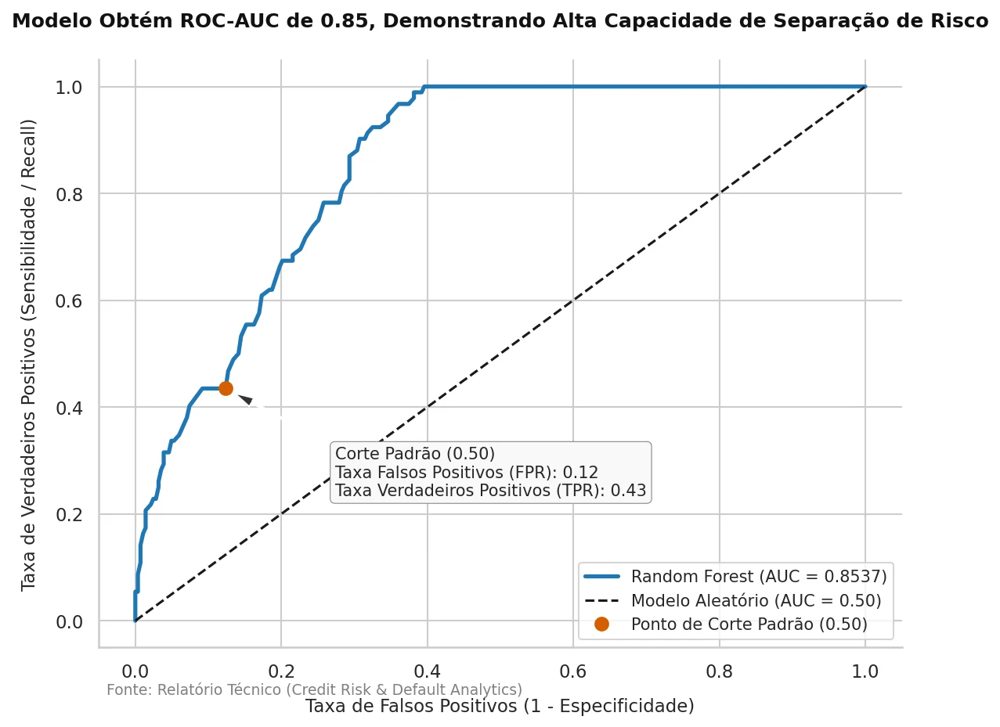
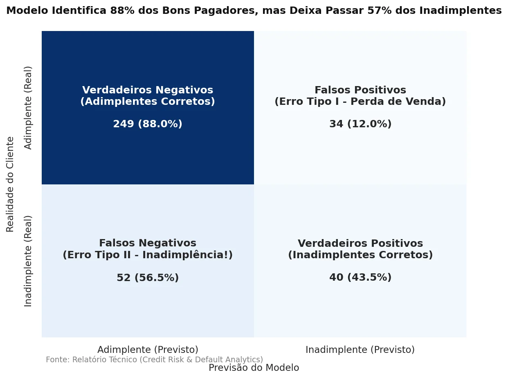
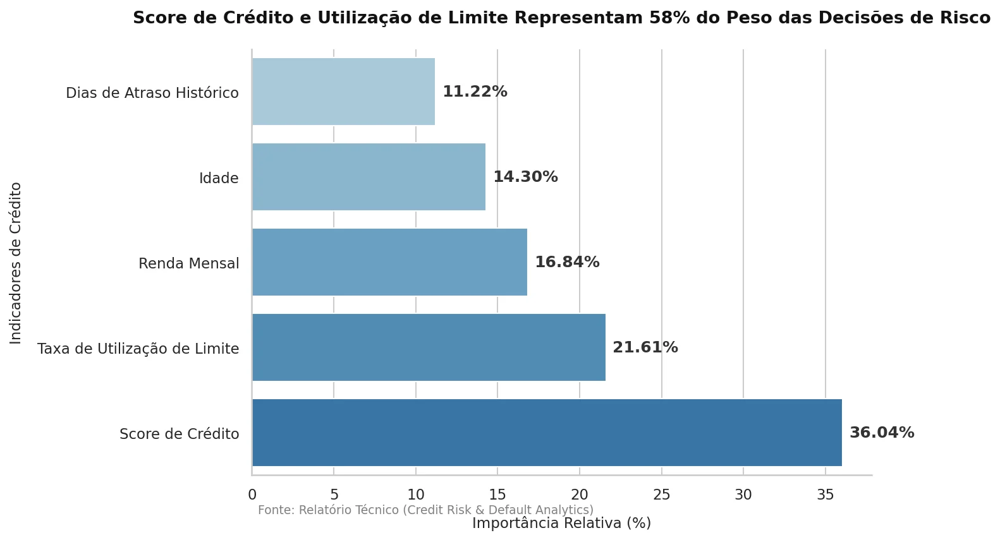

Problema
Identificar clientes propensos ao default antes do vencimento, reduzindo perdas e provisão (PDD).
Solução
Random Forest com 100 árvores, separação de treino e teste de 75% e 25%.
Dados
Carteira sintética de 1.500 clientes com 5 variáveis de crédito.
Resultado
ROC-AUC de 0,85 e acurácia de 77% na base de teste.
O que o modelo entregou
Métricas calculadas sobre 375 clientes reservados para teste, que o modelo não viu durante o treinamento.
Gráficos gerados no notebook
Saídas reais do código publicado no repositório.



Como o projeto foi construído
Simulação da carteira
1.500 clientes gerados com semente fixa (42), garantindo resultados reproduzíveis.
Regra de risco
Probabilidade de default sobe com score abaixo de 500, uso do limite acima de 80% e mais de 3 atrasos.
Treino e teste
Divisão de 75% (1.125 clientes) para treino e 25% (375) para teste.
Avaliação
Relatório de classificação, ROC-AUC, matriz de confusão e importância das variáveis.
- Score de crédito300 a 850
- Uso do limite10% a 100%
- Renda mensalmédia de R$ 5.500
- Idade21 a 64 anos
- Dias de atrasohistórico (Poisson)
Aprendizados e próximos passos
Aprendizados
- Score de birô e uso do limite são os sinais de risco mais fortes da carteira.
- Em crédito, o falso negativo é perda direta: aprovar um inadimplente custa mais do que recusar um bom pagador.
- Uma ROC-AUC alta não basta: o ponto de corte precisa refletir o apetite de risco da instituição.
Próximos passos
- Balancear as classes e testar cortes mais conservadores (por exemplo, 30%) para elevar o recall de inadimplentes.
- Adicionar SHAP para explicar cada decisão individual.
- Validar o modelo com uma base real anonimizada.
Projeto de estudo com dados sintéticos. Os resultados demonstram método e raciocínio analítico e não representam validação em produção.